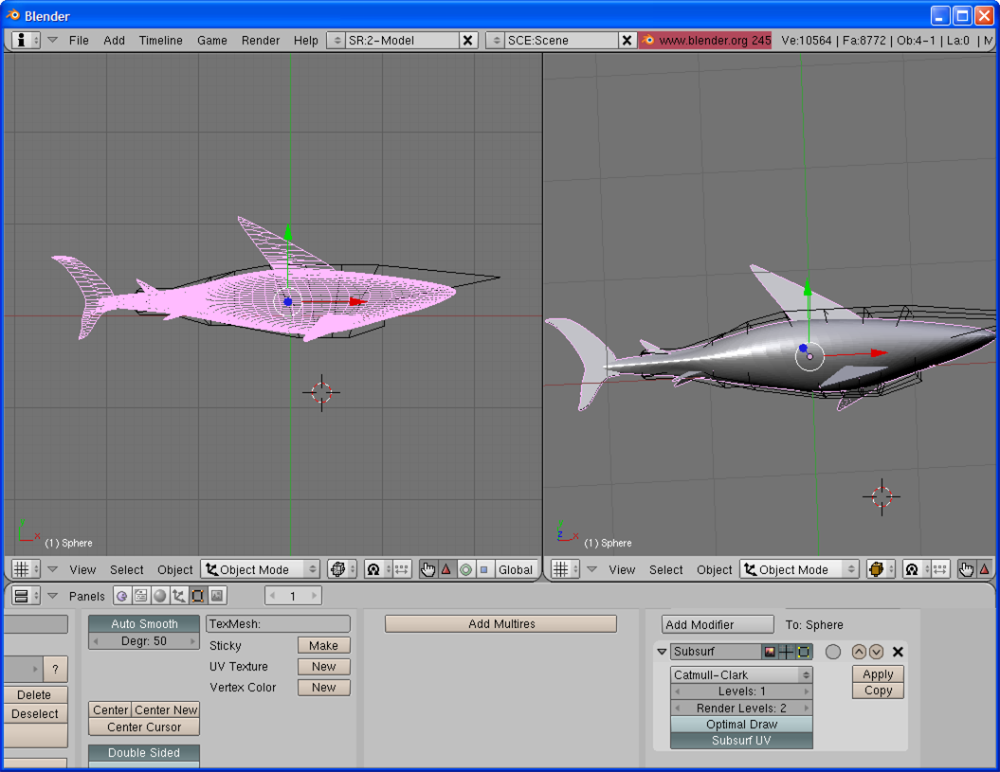
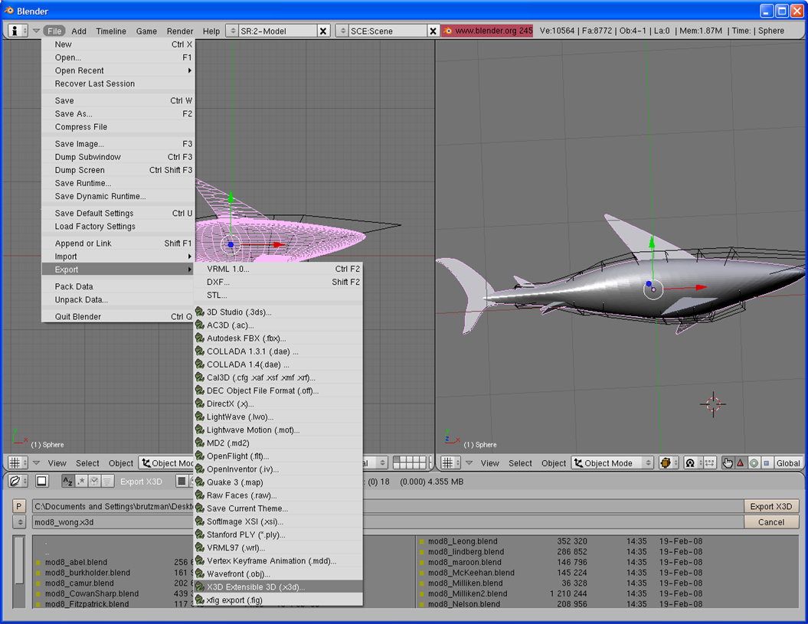
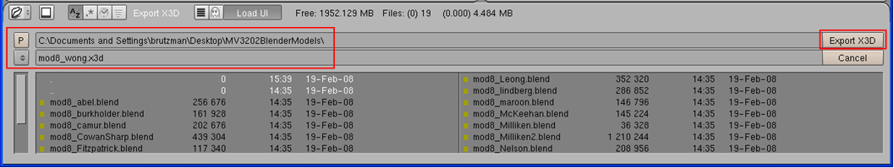
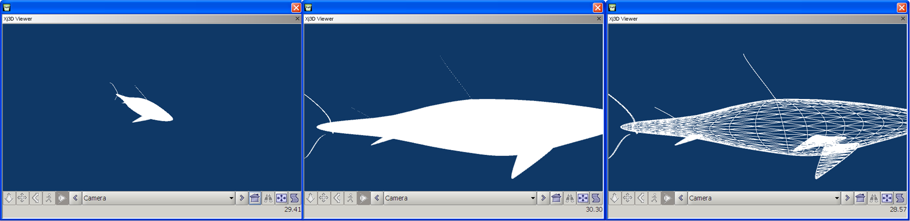
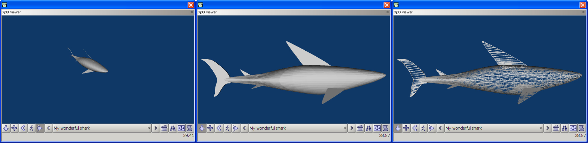
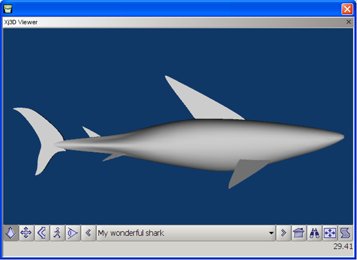

|
|
Blender Model Export to X3D |
|
 |
Example Files |
Blender |
File Export |
Save As |
X3D-Edit |
Meta Tags |
Scene Corrections |
IndexFaceSet Corrections |
Final Model |
HTML Page |
Acknowledgements |
Contact
This authoring example shows how to export a
Blender model
as an
Extensible 3D (X3D) Graphics
model, then make necessary improvements for the Web using
X3D-Edit.
-
Example Files.
Here are the Blender model and X3D-export files of interest for this tutorial.
-
Blender.
Here is the Blender entry screen showing the blender model of interest loaded.

-
File Export. Here is the menu sequence to perform an export is File > Export > X3D:

-
Save As.
Confirm or change the filename and directory selected for export:

-
X3D-Edit.
Load the model in X3D-Edit.
The following views show original view, Scale-to-Fit view, and Wireframe view (Xj3D alt-shift-W).

-
Meta Tags.
Insert additional file metadata
-
Add relevant document metadata as meta tags: name, description, author, translator, created, translated, modified, identifier, reference, license.
-
HelloWorld.x3d
(.html)
provides a good example of meta tags are desirable (don't forget to insert 'translated' date)
-
newScene.x3d
(.html)
lists (perhaps) all relevant meta tags
-
Scene Corrections.
Some corrections to the exported X3D model. These problems are submitted to the Blender community for correction and improvement.
-
Fix boolean values to lowercase (e.g.
attribute='TRUE' becomes attribute='true', similarly FALSE becomes false.
-
Remove (or comment out) NavigationInfo element, the exported values have an error in the type value, and are not really that helpful.
-
Add
<Appearance><Material/></Appearance>
immediately following
the </IndexedFaceSet> tag. This lets you assign a
color to the object, default is grey.
-
Export problems can be checked via the
Blender bug tracker.
-
IndexFaceSet Corrections.
Adjust IndexFaceSet parameters as follows to fix common export problems.
-
To smooth the shading on polygonalized IndexedFaceSet geometry, set
creaseAngle="3.14159"
-
To fix nonrendering IndexedFaceSet geometry from single-sided to double-sided polygons:
set
solid="false".
-
Complex shapes may include concave polygons, which might not render due to default graphics-hardware optimizations.
Set
convex="false" to force rendering of all polygons, concave and convex.
-
Test whether reversing order via ccw="true" might work for some meshes.
If possible, go back into Blender and reverse the offending geometry.
The following modified-model views show the camera view, Scale-to-Fit view, and Wireframe view (Xj3D alt-shift-W).
Note underlying problems with one-sided polygone (e.g. dorsal fin) and polygon creases that the above fixes address.

-
Final Model.
Here is how the final model looks, with creaseAngle smoothed.

-
HTML Page.
HTML Object Tag for X3D
shows how to place X3D objects within an HTML page, and
Modify, rename and edit a copy of
newHtmlPageWithX3dObject.html
to build an HTML page containing your scene.
Here is the final web page:
MyPetShark.html.
-
Acknowledgements.
The
original shark model
was created by Teck Hwee Wong.
Numerous questions and ideas for improvements to this page were contributed by NPS MOVES MV3202 students, February 2008.
Questions, suggestions and comments about these resources are welcome.
Please send them to
Don Brutzman
(brutzman at nps.edu)
Uniform Resource Locator (URL) for this page is
https://savage.nps.edu/X3D-Edit/BlenderExportToX3d.html
Revised 5 March 2008.
(official disclaimer)
"Material contained herein is made available for the purpose of
peer review and discussion and does not necessarily reflect the
views of the Department of the Navy or the Department of Defense."
{kind=link}
{kind=link}
{kind=link}
{kind=link}
{kind=link}
{kind=link}